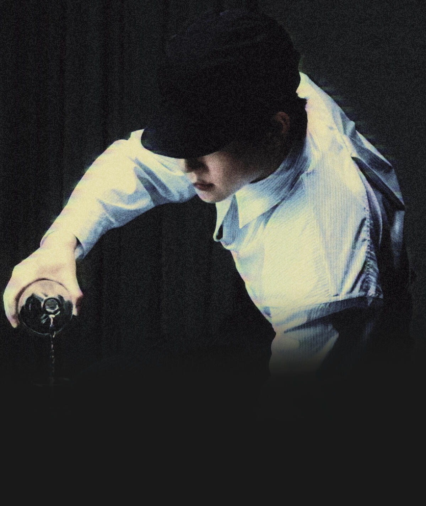

Underground Surgeon. Architect of Impossible Bodies.
Théoden Yegor
théoden has never considered the human body a finished work. his practice exists somewhere between surgery, biomechanics, and an increasingly personal understanding of aesthetics. working beyond conventional medicine, he develops synthetic integrations and reconstructive procedures that push the body far beyond its natural capabilities. his interest extends well beyond restoration. he is concerned with what the body might become, what can be replaced, and how far its original design can be taken before it becomes something else entirely. his work is conducted privately, away from medical oversight and public scrutiny. each commission is an opportunity to test the limits of human anatomy.